\(\renewcommand{\AA}{\text{Å}}\)
dump image command
dump movie command
(see below for dump_modify options specific to dump image/movie)
Syntax
dump ID group-ID style N file color diameter keyword value ...
ID = user-assigned name for the dump
group-ID = ID of the group of atoms to be imaged
style = image or movie = style of dump command (other styles such as atom or cfg or dcd or xtc or xyz or local or custom are discussed on the dump doc page)
N = dump every this many timesteps
file = name of file to write image to
color = atom attribute that determines color of each atom
diameter = atom attribute that determines size of each atom
zero or more keyword/value pairs may be appended
keyword = atom or adiam or autobond or bond or grid or line or tri or ellipsoid or body or compute or fix or size or view or center or up or zoom or box or axes or region or subbox or shiny or fsaa or ssao
atom = yes or no = do or do not draw atoms adiam size = numeric value for atom diameter (distance units) autobond values = cutoff width = bond cutoff and width of bonds bond values = color width = color and width of bonds color = atom or type or none or c_ID or c_ID[I] c_ID = per-bond vector computed by a local compute with ID c_ID[I] = Ith column of per-bond array computed by a local compute with ID width = number or atom or type or none number = numeric value for bond width (distance units) grid = per-grid value to use when coloring each grid cell per-grid value = c_ID:gname:dname, c_ID:gname:dname[I], f_ID:gname:dname, f_ID:gname:dname[I] gname = name of grid defined by compute or fix dname = name of data field defined by compute or fix c_ID = per-grid vector calculated by a compute with ID c_ID[I] = Ith column of per-grid array calculated by a compute with ID f_ID = per-grid vector calculated by a fix with ID f_ID[I] = Ith column of per-grid array calculated by a fix with ID line = color width color = type or index or atom width = numeric value for line width (distance units) tri = color tflag width color = type or index or atom tflag = 1 for just triangle, 2 for just tri edges, 3 for both width = numeric value for triangle edge width (distance units) ellipsoid = color eflag level width color = type or index or atom eflag = 1 for triangles, 2 for wireframe level = mesh refinement level, value between 1 (low resolution) and 6 (ultra high resolution) width = diameter of wireframe edges (distance units) (ignored for triangles) body = color bflag1 bflag2 color = type or index or atom bflag1,bflag2 = 2 numeric flags to affect how bodies are drawn compute = computeID color cflag1 cflag2 computeID = ID of computes that generates objects to draw color = type or element or const cflag1,cflag2 = 2 numeric flags to affect how compute objects are drawn fix = fixID color fflag1 fflag2 fixID = ID of fix that generates objects to draw color = type or element or const fflag1,fflag2 = 2 numeric flags to affect how fix objects are drawn size values = width height = size of images width = width of image in # of pixels height = height of image in # of pixels view values = theta phi = view of simulation box theta = view angle from +z axis (degrees) phi = azimuthal view angle (degrees) theta or phi can be a variable (see below) center values = flag Cx Cy Cz = center point of image flag = s for static, d for dynamic Cx,Cy,Cz = center point of image as fraction of box dimension (0.5 = center of box) Cx,Cy,Cz can be variables (see below) up values = Ux Uy Uz = direction that is "up" in image Ux,Uy,Uz = components of up vector Ux,Uy,Uz can be variables (see below) zoom value = zfactor = size that simulation box appears in image zfactor = scale image size by factor > 1 to enlarge, factor < 1 to shrink zfactor can be a variable (see below) box values = yes/no diam = draw outline of simulation box yes/no = do or do not draw simulation box lines diam = diameter of box lines as fraction of shortest box length axes values = axes length diam = draw xyz axes axes = yes or no or center or lowerleft or lowerright or upperleft or upperright = do or do not draw xyz axes arrows and select location length = length of axes lines as fraction of respective box lengths diam = diameter of axes lines as fraction of shortest box length region values = region-ID color drawstyle [opacity (optional) npoints (optional) diameter (optional)] [hull_points npoints (optional)] region-ID = ID of the region to render color = color name for region graphics drawstyle = filled or transparent or frame or points filled = render region as a filled object, with optional open faces transparent = same as filled but has selectable opacity frame = render region as a wireframe (like box or subbox) points = fill region with spheres at random locations opacity = level of opacity (from 0.0 to 1.0, only for drawstyle transparent) npoints = number of attempted points (only for drawstyle points) diameter = diameter of wireframe or points (only for drawstyles frame and points) hull_points npoints = set number of points for creating a Delaunay triangulation (optional) subbox values = lines diam = draw outline of processor subdomains lines = yes or no = do or do not draw subdomain lines diam = diameter of subdomain lines as fraction of shortest box length shiny value = sfactor = shinyness of spheres and cylinders sfactor = shinyness of spheres and cylinders from 0.0 to 1.0 fsaa arg = yes/no yes/no = do or do not apply anti-aliasing ssao value = shading seed dfactor = SSAO depth shading shading = yes or no = turn depth shading on/off seed = random # seed (positive integer) dfactor = strength of shading from 0.0 to 1.0
dump_modify options for dump image/movie
Syntax
dump_modify dump-ID keyword values ...
these keywords apply only to the image and movie styles and are documented on this page
keyword = acolor or adiam or amap or gmap or bmap or atrans or backcolor or backcolor2 or bcolor or bdiam or btrans or bitrate or boxcolor or color or lights or loadcolors or savecolors or framerate or axestrans or boxtrans or subboxtrans or ccolor or ctrans or fcolor or ftrans
see the dump modify doc page for more general keywords
acolor args = type color type = atom type (numeric or type label) or range of numeric types (see below) color = name of color or color1/color2/... adiam args = type diam type = atom type (numeric or type label) or range of numeric types (see below) diam = diameter of atoms of that type (distance units) amap args = lo hi style delta N entry1 entry2 ... entryN lo = number or min = lower bound of range of color map hi = number or max = upper bound of range of color map style = 2 letters = c or d or s plus a or f c for continuous d for discrete s for sequential a for absolute f for fractional delta = binsize (only used for style s, otherwise ignored) binsize = range is divided into bins of this width N = # of subsequent entries entry = value color (for continuous style) value = number or min or max = single value within range color = name of color used for that value entry = lo hi color (for discrete style) lo/hi = number or min or max = lower/upper bound of subset of range color = name of color used for that subset of values entry = color (for sequential style) color = name of color used for a bin of values atrans args = type transparency type = atom type (numeric or type label) or range of numeric types (see below) transparency = transparency of atoms of that type (value between 0 (invisible) and 1 (fully opaque)) backcolor arg = color color = name of color for background backcolor2 arg = color color = name of second color for vertical background gradient. "none" to disable gradient bcolor args = type color type = bond type (numeric or type label) or range of numeric types (see below) color = name of color or color1/color2/... bdiam args = type diam type = bond type (numeric or type label) or range of numeric types (see below) diam = diameter of bonds of that type (distance units) btrans args = type transparency type = bond type (numeric or type label) or range of numeric types (see below) transparency = transparency of bonds of that type (value between 0 (invisible) and 1 (fully opaque)) axestrans arg = transparency transparency = transparency for axes lines (value between 0 (invisible) and 1 (fully opaque)) boxtrans arg = transparency transparency = transparency for simulation box lines (value between 0 (invisible) and 1 (fully opaque)) boxcolor arg = color color = name of color for simulation box lines and processor subdomain lines subboxtrans arg = transparency transparency = transparency for simulation subbox lines (value between 0 (invisible) and 1 (fully opaque)) color args = name R G B or name hex name = name of color R,G,B = red/green/blue numeric values from 0.0 to 1.0 hex = 24-bit RGB color in hexadecimal lights args = ambient key fill back ambient key fill back = set light intensity value from 0.0 to 1.0 loadcolors arg = filename filename = load color definitions, per-type colors, and lights from JSON format file savecolors arg = filename filename = save per-type colors and lights to JSON format file ccolor args = computeID color computeID = ID of the compute color = name of color for image objects provided by this compute when using "const" color style ctrans args = computeID transparency computeID = ID of the compute transparency = transparency for image objects provided by this compute fcolor args = fixID color fixID = ID of the fix color = name of color for image objects provided by this fix when using "const" color style ftrans args = fixID transparency fixID = ID of the fix transparency = transparency for image objects provided by this fix bitrate arg = rate rate = target bitrate for movie in kbps framerate arg = fps fps = frames per second for movie gmap args = identical to amap args bmap args = identical to amap args
Examples
dump d0 all image 100 dump.*.jpg type type
dump d1 mobile image 500 snap.*.png element element ssao yes 4539 0.6
dump d2 all image 200 img-*.ppm type type zoom 2.5 adiam 1.5 size 1280 720
dump m0 all movie 1000 movie.mpg type type size 640 480
dump m1 all movie 1000 movie.avi type type size 640 480
dump m2 all movie 100 movie.m4v type type zoom 1.8 adiam v_value size 1280 720
dump_modify 1 amap min max cf 0.0 3 min green 0.5 yellow max blue boxcolor red
labelmap atom 1 C 2 H 3 O 4 N
dump_modify 1 acolor C gray acolor H white acolor O red acolor N blue
dump_modify 1 color gray80 0.8 0.8 0.8 color gray20 0x333333
Description
Dump a high-quality rendered image of the atom configuration every \(N\) timesteps and save the images either as a sequence of JPEG, PNG, TGA, or PPM files, or as a single movie file. The options for this command as well as the dump_modify command control what is included in the image or movie and how it appears. A series of such images can easily be manually converted into an animated movie of your simulation or the process can be automated without writing the intermediate files using the dump movie style; see further details below. Other dump styles store snapshots of numerical data associated with atoms in various formats, as discussed on the dump doc page.
Note that a set of images or a movie can be made after a simulation has been run, using the rerun command to read snapshots from an existing dump file, and using these dump commands in the rerun script to generate the images/movie.
Here are five sample images, rendered as JPEG or PNG files.
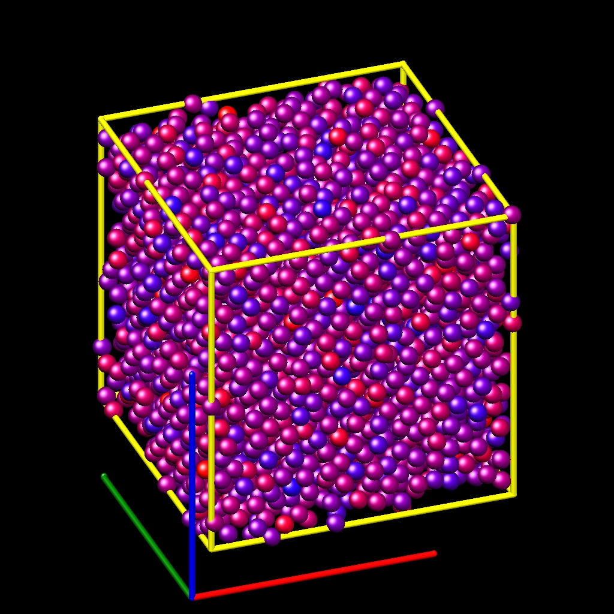 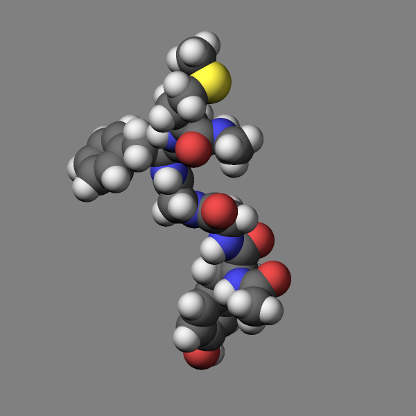 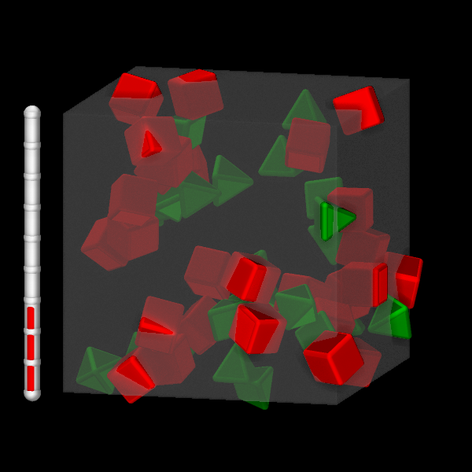 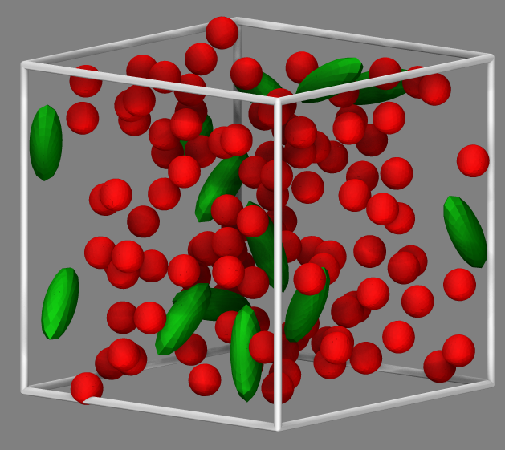 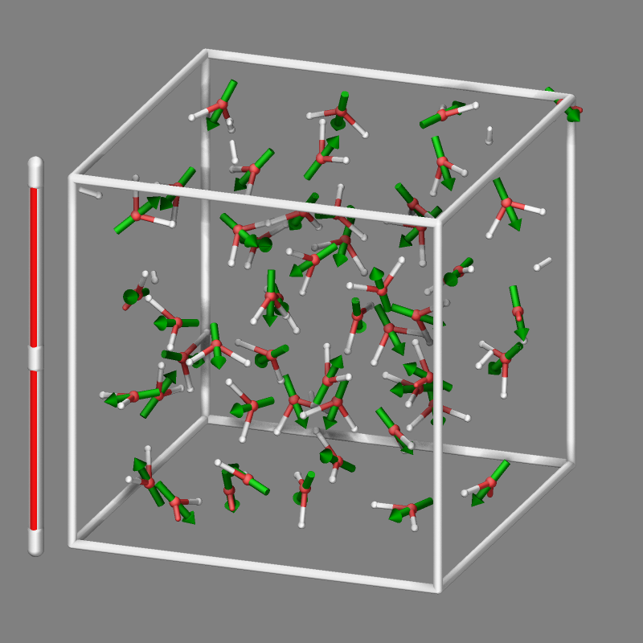
A detailed discussion of advanced graphics settings and workflows with examples is provided in the Visualize LAMMPS snapshots howto.
Added in version 11Feb2026: support for writing compressed TGA files
Only atoms in the specified group are rendered in the image. The dump_modify region and thresh commands can also alter what atoms are included in the image. The filename suffix determines whether a JPEG, PNG, TGA, or PPM file is created with the image dump style. If the suffix is “.jpg” or “.jpeg”, then a JPEG format file is created, if the suffix is “.png”, then a PNG format file is created, if the suffix is “.tga”, then a compressed 24-bit RGB TGA or TARGA format file is created, else a PPM (aka NETPBM) format file is created. The JPEG, PNG, and TGA files are binary; PPM has a text mode header followed by binary data. JPEG images have lossy compression, PNG and TGA have lossless compression, and PPM files are uncompressed but can be compressed with a supported compression program, if LAMMPS has been compiled with compression support and a supported suffix is used.
Similarly, the format of the resulting movie is chosen with the movie dump style. This is handled by the underlying FFmpeg converter and thus details have to be looked up in the FFmpeg documentation. Typical examples are: .avi, .mpg, .m4v, .mp4, .mkv, .flv, .mov, .gif Additional settings of the movie compression like bitrate and framerate can be set using the dump_modify command as described below.
To write out JPEG and PNG format files, you must build LAMMPS with
support for the corresponding JPEG or PNG library. To convert images
into movies, LAMMPS has to be compiled with the -DLAMMPS_FFMPEG
flag. See the Build settings page for
details.
Note
Because periodic boundary conditions are enforced only on timesteps when neighbor lists are rebuilt, the coordinates of an atom in the image may be slightly outside the simulation box.
Dumps are performed on timesteps that are a multiple of \(N\) (including timestep 0) and on the last timestep of a minimization if the minimization converges. Note that this means a dump will not be performed on the initial timestep after the dump command is invoked, if the current timestep is not a multiple of \(N\). This behavior can be changed via the dump_modify first command, which can be useful if the dump command is invoked after a minimization ended on an arbitrary timestep. \(N\) can be changed between runs by using the dump_modify every command.
Dump image filenames must contain a wildcard character “*” so that one image file per snapshot is written. The “*” character is replaced with the timestep value. For example, tmp.dump.*.jpg becomes tmp.dump.0.jpg, tmp.dump.10000.jpg, tmp.dump.20000.jpg, etc. Note that the dump_modify pad command can be used to ensure all timestep numbers are the same length (e.g., 00010), which can make it easier to convert a series of images into a movie in the correct ordering.
Dump movie filenames on the other hand, must not have any wildcard character since only one file combining all images into a single movie will be written by the movie encoder.
The color and diameter settings determine the color and size of atoms rendered in the image. They can be any atom attribute defined for the dump custom command, including type and element. This includes per-atom quantities calculated by a compute, fix, or variable, which are prefixed by “c_”, “f_”, or “v_”, respectively. Note that the diameter setting can be overridden with a numeric value applied to all atoms by the optional adiam keyword.
Changed in version 4Jul2026: Extended list of colors from 6 to 16
If type is specified for the color setting, then the color of each atom is determined by its atom type. By default the mapping of atom types to colors is: red, forestgreen, blue, gold, cyan, magenta, silver, orange, lime, gray, darkred, darkgreen, darkblue, darkcyan, darkmagenta, and darkgray for the first 16 atom types and repeats itself after that. This mapping can be changed by the “dump_modify acolor” command, as described below.
If type is specified for the diameter setting then the diameter of each atom is determined by its atom type. By default all types have diameter 1.0. This mapping can be changed by the “dump_modify adiam” command, as described below.
If element is specified for the color and/or diameter setting, then the color and/or diameter of each atom is determined by which element it is, which in turn is specified by the element-to-type mapping specified by the “dump_modify element” command, as described below. By default the element for every atom type is set to C (carbon). Every element has a color and diameter associated with it, which is the same as the colors and sizes used by the AtomEye visualization package.
If other atom attributes are used for the color or diameter settings, they are interpreted in the following way.
If “vx”, for example, is used as the color setting, then the color of the atom will depend on the x-component of its velocity. The association of a per-atom value with a specific color is determined by a “color map”, which can be specified via the dump_modify amap command, as described below. The basic idea is that the atom-attribute will be within a range of values, and every value within the range is mapped to a specific color. Depending on how the color map is defined, that mapping can take place via interpolation so that a value of -3.2 is halfway between “red” and “blue”, or discretely so that the value of -3.2 is “orange”.
If “vx”, for example, is used as the diameter setting, then the atom will be rendered using the x-component of its velocity as the diameter. If the per-atom value <= 0.0, then the atom will not be drawn. Note that finite-size spherical particles, as defined by atom_style sphere define a per-particle radius or diameter, which can be used as the diameter setting.
The various keywords listed above control how the image is rendered. As listed below, all of the keywords have defaults, most of which you will likely not need to change. As described below, the dump modify command also has options specific to the dump image style, particularly for assigning colors to atoms, bonds, and other image features.
The atom keyword allow you to turn off the drawing of all atoms, if the specified value is no. Note that this will not turn off the drawing of particles that are represented as lines, triangles, or bodies, as discussed below. These particles can be drawn separately if the line, tri, ellipsoid, or body keywords are used.
The adiam keyword allows you to override the diameter setting to set a single numeric size. All atoms will be drawn with that diameter, e.g. 1.5, which is in whatever distance units the input script defines, e.g. Angstroms.
Added in version 10Sep2025.
The autobond keyword enables drawing bonds for systems where bonds are implicit, e.g. for potentials like AIREBO or ReaxFF. The first argument is the bond cutoff, i.e. bonds are drawn for pairs of atoms that are closer than this cutoff; the second argument is the bond diameter. The implicit bonds are found by searching the pair-wise neighbor list for pairs of atoms that are closer than the bond cutoff. The color of the bond is derived from the color of the atoms forming the implicit bond. For unit styles metal and real an additional condition is applied: if the mass of both atoms of a pair within the bond cutoff is lower than 3 atomic mass units, a bond is not drawn; this prohibits displaying unwanted hydrogen-hydrogen bonds for alkyl or alcohol groups or for water with typical cutoffs suitable for displaying covalent bonds. For ReaxFF it is also possible to visualize bonds as they are computed through using fix reaxff/bonds with the fix keyword (see below).
The bond keyword allows to you to alter how bonds are drawn. A bond is only drawn if both atoms in the bond are being drawn due to being in the specified group and due to other selection criteria (e.g. region, threshold settings of the dump_modify command). By default, bonds are drawn if they are defined in the input data file as read by the read_data command. Using none for both the bond color and width value will turn off the drawing of all bonds.
If atom is specified for the bond color value, then each bond is drawn in 2 halves, with the color of each half being the color of the atom at that end of the bond.
Changed in version 4Jul2026: Extended list of default colors from 6 to 16
If type is specified for the color value, then the color of each bond is determined by its bond type. By default the mapping of bond types to colors is: red, forestgreen, blue, gold, cyan, magenta, silver, orange, lime, gray, darkred, darkgreen, darkblue, darkcyan, darkmagenta, and darkgray for the first 16 bond types and repeats itself after that. This mapping can be changed by the “dump_modify bcolor” command, as described below.
Added in version 4Jul2026.
If a compute reference c_ID or c_ID[I] is specified for the color value, then each bond is colored by a per-bond value taken from that compute, mapped to a color through a color map (set with the “dump_modify bmap” command, described below) in the same way per-atom values are mapped via amap. The referenced compute must produce local per-bond data, for example compute bond/local with the dist (bond length) or engpot (bond energy) attribute. Use c_ID when the compute produces a per-bond vector (a single attribute) and c_ID[I] to select column I when it produces a per-bond array (multiple attributes). The compute must generate one value for each bond that is drawn, in the same order, so it should compute over the same set of bonds as is being visualized (typically the all group). If the number of values produced does not match the number of bonds drawn, LAMMPS stops with an error.
The bond width value can be a numeric value or atom or type (or none as indicated above).
If a numeric value is specified, then all bonds will be drawn as cylinders with that diameter, e.g. 1.0, which is in whatever distance units the input script defines, e.g. Angstroms.
If atom is specified for the width value, then each bond will be drawn with a width corresponding to the minimum diameter of the two atoms in the bond.
If type is specified for the width value then the diameter of each bond is determined by its bond type. By default all types have diameter 0.5. This mapping can be changed by the “dump_modify bdiam” command, as described below.
The line keyword can be used when atom_style line is used to define particles as line segments, and will draw them as lines. If this keyword is not used, such particles will be drawn as spheres, the same as if they were regular atoms.
Changed in version 30Mar2026: added index and atom color styles
There are currently three supported settings for the color value: type, index, or atom. With the type setting the line segment particles will be colored according to the atom type of the particle. With the index setting, colors from the list of available per-atom type colors are assigned to the line particles in a non-deterministic round-robin fashion. With the atom setting, the color follows the coloring selected for coloring atoms (including using color maps). If more different colors than atom types are desired, the number of atom types must be increased correspondingly when using either the create_box or the read_data command.
The line width can only be a numeric value, which specifies that all lines will be drawn as cylinders with that diameter, e.g. 1.0, which is in whatever distance units the input script defines, e.g. Angstroms.
The tri keyword can be used when atom_style tri is used to define particles as triangles, and will draw them as triangles or edges (3 lines) or both, depending on the setting for tflag. If edges are drawn, the width setting determines the diameters of the line segments. If this keyword is not used, triangle particles will be drawn as spheres, the same as if they were regular atoms.
Changed in version 30Mar2026: added index and atom color styles
There are currently three supported settings for the color value: type, index, or atom. With the type setting the triangles will be colored according to the atom type of the particle. With the index setting, colors from the list of available per-atom type colors are assigned to the triangulated particles in a non-deterministic round-robin fashion. With the atom setting, the color follows the coloring selected for coloring atoms (including using color maps). If more different colors than atom types are desired, the number of atom types must be increased correspondingly when using either the create_box or the read_data command.
Added in version 11Feb2026.
Changed in version 30Mar2026: Now uses rounded triangles
The ellipsoid keyword can be used when atom_style ellipsoid is used to define particles as ellipsoids, and will draw them as a mesh of rounded triangles or edges, depending on the setting for eflag(1 for rounded triangles, 2 for edges, other values are accepted for backward compatibility but select rounded triangles). If edges are drawn, the width setting determines the diameters of the line segments. If this keyword is not used, ellipsoid particles will be drawn as spheres, the same as if they were regular atoms.
Changed in version 30Mar2026: added index and atom color styles
There are currently three supported settings for the color value: type, index, or atom. With the type setting the ellipsoids will be colored according to the atom type of the particle. With the index setting, colors from the list of available per-atom type colors are assigned to the ellipsoid particles in a non-deterministic round-robin fashion. With the atom setting, the color follows the coloring selected for coloring atoms (including using color maps). If more different colors than atom types are desired, the number of atom types must be increased correspondingly when using either the create_box or the read_data command.
Changed in version 30Mar2026: changed initial geometry to icosahedron and use rounded triangles
The level setting determines the number of triangles in the mesh of triangles and thus the resolution of the representation of the ellipsoid. At level 1 the ellipsoid is represented by an icosahedron that is stretched according to the ellipsoid’s shape parameters. For each higher level, a refinement iteration is performed where any of the triangles are replaced by four triangles and their edges are shifted to be on the surface of the ellipsoid. The maximum allowed refinement level is 6 (corresponding to 12288 triangles per ellipsoid).
Image quality versus rendering speed
Since the rendered ellipsoids are constructed from iteratively refined triangle meshes as explained above, the image quality increases with each refinement level, but so does the computational effort to render the image. This becomes more pronounced when FSAA or SSAO or both are enabled.
The body keyword can be used when atom_style body is used to define body particles with internal state (e.g. sub-particles), and will drawn them in a manner specific to the body style. If this keyword is not used, such particles will be drawn as spheres, the same as if they were regular atoms.
The Howto body page describes the body styles LAMMPS currently supports, and provides more details as to the kind of body particles they represent and how they are drawn by this dump image command. For all the body styles, individual atoms can be either a body particle or a usual point (non-body) particle. Non-body particles will be drawn the same way they would be as a regular atom. The bflag1 and bflag2 settings are numerical values which are passed to the body style to affect how the drawing of a body particle is done. See the Howto body page for a description of what these parameters mean for each body style.
Changed in version 11Feb2026: added index color style
Changed in version 30Mar2026: added atom color style
There are currently three supported settings for the color value: type, index, or atom. With the atom setting, the color follows the coloring selected for coloring atoms (including using color maps). With the type setting the body particles will be colored according to the atom type of the particle. With the index setting, colors from the list of available per-atom type colors are assigned to the body particles in a non-deterministic round-robin fashion. If more different colors than atom types are desired, the number of atom types must be increased correspondingly when using either the create_box or the read_data command.
Changed in version 11Feb2026: Support for computes and several fix styles added and more flexible color selection
The compute keyword can be used with a compute style that produces information about objects to be drawn. Similarly, the fix keyword can be used with a fix style that produces information about objects to be drawn. The compute or fix keywords may be used multiple times to include visualizations of graphics objects from multiple computes and fixes. The compute keyword is followed by the compute ID of the compute, the color style setting and two numerical values cflag1 and cflag2. The fix keyword is followed by the fix ID of the fix, the color style setting and two numerical values fflag1 and fflag2.
The color style may be either type, element, or const. The first two will use the same color as assigned to the corresponding atom type and thus it depends on the implementation of the compute or fix which atom type it associates with any object. Often this will be atom type 1. For the const type a constant color will be used that can be changed with a dump_modify ccolor or dump_modify fcolor command (see below). By default the constant color will be “white”.
The cflag1 and cflag2 or fflag1 and fflag2 settings are numerical values which are used by dump image to adjust how the drawing of the objects communicated by the fix is done. See the documentation of the individual computes and fixes for a description of what these parameters mean for the graphics objects provided by those fixes.
More details and some examples for including graphics objects from compute and fix commands are in the Visualize LAMMPS snapshots howto.
Added in version 10Sep2025.
Changed in version 11Feb2026: draw style transparent was added
Changed in version 4Jul2026: draw triangulated hull from random points for region style intersect or union
The region keyword can be used to create a graphical representation of a region. This can be helpful in debugging the location and extent of regions, especially when those have parameters controlled by variables. The sequence of arguments to the region are: the region-ID, the color for drawing the region, the draw style, and possible additional arguments as required by the draw style.
Four draw styles of representing a region are available: filled, transparent, frame, and points. With draw style filled the surface of the region is triangulated and drawn. For region styles that support open faces, surfaces for such open faces are skipped. The style transparent is like filled but takes an additional parameter in the range of 0.0 to 1.0 that defines the opacity and thus allows to see what is inside the region for values < 1. Draw style frame represents the region with a mesh of “wires”. The diameter of these “wires” are set with the following argument. Unlike with the filled style and similar to the transparent style, you can see what is inside the region with this draw style. The fourth draw style, points, generates a random point cloud inside the simulation box and draws only those points that are within the region. This uses the same test than what is used to determine if an atom is inside the region but ignores any open faces (which would match all positions as “inside”). When using draw styles filled, transparent, or frame with unions or intersections of multiple regions an enclosing hull is first created from a point cloud that is generated the same way as in the points draw style. The number of points used for the hull approximation (default is 100000) can be set by the optional hull_points keyword.
Recommended transparency values are 0.25, 0.5, or 0.75 when used in combination with fsaa on.
The size keyword sets the width and height of the created images, i.e. the number of pixels in each direction.
The view, center, up, and zoom values determine how 3d simulation space is mapped to the 2d plane of the image. Basically they control how the simulation box appears in the image.
All of the view, center, up, and zoom values can be specified as numeric quantities, whose meaning is explained below. Any of them can also be specified as an equal-style variable, by using v_name as the value, where “name” is the variable name. In this case the variable will be evaluated on the timestep each image is created to create a new value. If the equal-style variable is time-dependent, this is a means of changing the way the simulation box appears from image to image, effectively doing a pan or fly-by view of your simulation.
The view keyword determines the viewpoint from which the simulation box is viewed, looking towards the center point. The theta value is the vertical angle from the +z axis, and must be an angle from 0 to 180 degrees. The phi value is an azimuthal angle around the z axis and can be positive or negative. A value of 0.0 is a view along the +x axis, towards the center point. If theta or phi are specified via variables, then the variable values should be in degrees.
The center keyword determines the point in simulation space that will be at the center of the image. Cx, Cy, and Cz are specified as fractions of the box dimensions, so that (0.5,0.5,0.5) is the center of the simulation box. These values do not have to be between 0.0 and 1.0, if you want the simulation box to be offset from the center of the image. Note, however, that if you choose strange values for Cx, Cy, or Cz you may get a blank image. Internally, Cx, Cy, and Cz are converted into a point in simulation space. If flag is set to “s” for static, then this conversion is done once, at the time the dump command is issued. If flag is set to “d” for dynamic then the conversion is performed every time a new image is created. If the box size or shape is changing, this will adjust the center point in simulation space.
The up keyword determines what direction in simulation space will be “up” in the image. Internally it is stored as a vector that is in the plane perpendicular to the view vector implied by the theta and phi values, and which is also in the plane defined by the view vector and user-specified up vector. Thus this internal vector is computed from the user-specified up vector as
up_internal = view cross (up cross view)
This means the only restriction on the specified up vector is that it cannot be parallel to the view vector, implied by the theta and phi values.
The zoom keyword scales the size of the simulation box as it appears in the image. The default zfactor value of 1 should display an image mostly filled by the atoms in the simulation box. A zfactor > 1 will make the simulation box larger; a zfactor < 1 will make it smaller. Zfactor must be a value > 0.0.
The box keyword determines if and how the simulation box boundaries are rendered as thin cylinders in the image. If no is set, then the box boundaries are not drawn and the diam setting is ignored. If yes is set, the 12 edges of the box are drawn, with a diameter that is a fraction of the shortest box length in x,y,z (for 3d) or x,y (for 2d). The color of the box boundaries can be set with the “dump_modify boxcolor” command.
Changed in version 11Feb2026.
The axes keyword determines if and how the coordinate axes are rendered in the image as arrows with the letters ‘X’, ‘Y’, and ‘Z’ to indicate the direction. If no is set, then the axes are not drawn and the length and diam settings are ignored. If yes or lowerleft is set, 3 arrows are drawn to represent the x,y,z axes in colors red, green, and blue, respectively. The origin of these arrows will be offset from the lower left corner of the box by 10%. If center is set the origin of the arrows will be in the center of the box. If lowerright is set, the origin of the arrows will be offset by 20% of the lower right corner of the box. If upperleft or upperright are set the origin of the arrows will be placed similar to the lower corner arrows, but offset by 20% from the top. The length setting determines how long the cylinders will be as a fraction of the respective box lengths. The diam setting determines their thickness as a fraction of the shortest box length in x,y,z (for 3d) or x,y (for 2d).
The subbox keyword determines if and how processor subdomain boundaries are rendered as thin cylinders in the image. If no is set (default), then the subdomain boundaries are not drawn and the diam setting is ignored. If yes is set, the 12 edges of each processor subdomain are drawn, with a diameter that is a fraction of the shortest box length in x,y,z (for 3d) or x,y (for 2d). The color of the subdomain boundaries can be set with the “dump_modify boxcolor” command.
The shiny keyword determines how shiny the objects rendered in the image will appear. The sfactor value must be a value 0.0 <= sfactor <= 1.0, where sfactor = 1 is a highly reflective surface and sfactor = 0 is a rough non-shiny surface.
Added in version 21Nov2023.
The fsaa keyword can be used with the dump image command to improve the image quality by enabling full scene anti-aliasing. Internally the image is rendered at twice the width and height and then scaled down by computing the average of each 2x2 block of pixels to produce a single pixel in the final image at the original size. This produces images with smoother, less ragged edges. The application of this algorithm can increase the cost of computing the image by about 3x or more.
The ssao keyword turns on/off a screen space ambient occlusion (SSAO) model for depth shading. If yes is set, then atoms further away from the viewer are darkened via a randomized process, which is perceived as depth. The strength of the effect can be scaled by the dfactor parameter. If no is set, no depth shading is performed. The calculation of this effect can increase the cost of computing the image substantially by 5x or more, especially with larger images. When used in combination with the fsaa keyword the computational cost of depth shading is particularly large. In case LAMMPS has been compiled with OpenMP support, the SSAO processing is distributed across multiple threads.
Dump_modify keywords for dump image and dump movie
The following dump_modify keywords apply only to the dump image and dump movie styles. Any keyword that works with dump image also works with dump movie, since the movie is simply a collection of images. Some of the keywords only affect the dump movie style. The descriptions give details.
The acolor keyword can be used with the dump image command, when its atom color setting is type, to set the color that atoms of each type will be drawn in the image.
The specified type should be a type label or integer from 1 to Ntypes = the number of atom types. For numeric types, a wildcard asterisk can be used in place of or in conjunction with the type argument to specify a range of atom types. This takes the form “*” or “*n” or “n*” or “m*n”. If N = the number of atom types, then an asterisk with no numeric values means all types from 1 to N. A leading asterisk means all types from 1 to n (inclusive). A trailing asterisk means all types from n to N (inclusive). A middle asterisk means all types from m to n (inclusive).
The specified color can be a single color which is any of the 140 pre-defined colors (see below) or a color name defined by the “dump_modify color” command, as described below. Or it can be two or more colors separated by a “/” character, e.g. red/green/blue. In the former case, that color is assigned to all the specified atom types. In the latter case, the list of colors are assigned in a round-robin fashion to each of the specified atom types.
The adiam keyword can be used with the dump image command, when its atom diameter setting is type, to set the size that atoms of each type will be drawn in the image. The specified type should be a type label or integer from 1 to Ntypes. As with the acolor keyword, a wildcard asterisk can be used as part of the type argument to specify a range of numeric atom types. The specified diam is the size in whatever distance units the input script is using, e.g. Angstroms.
The amap keyword can be used with the dump image command, with its atom keyword, when its atom setting is an atom-attribute, to setup a color map. The color map is used to assign a specific RGB (red/green/blue) color value to an individual atom when it is drawn, based on the atom’s attribute, which is a numeric value, e.g. its x-component of velocity if the atom-attribute “vx” was specified.
The basic idea of a color map is that the atom-attribute will be within a range of values, and that range is associated with a series of colors (e.g. red, blue, green). An atom’s specific value (vx = -3.2) can then mapped to the series of colors (e.g. halfway between red and blue), and a specific color is determined via an interpolation procedure. There are some example command lines and resulting images at the end of this paragraph.
There are many possible options for the color map, enabled by the amap keyword. Here are the details.
The lo and hi settings determine the range of values allowed for the atom attribute. If numeric values are used for lo and/or hi, then values that are lower/higher than that value are set to the value. I.e. the range is static. If lo is specified as min or hi as max then the range is dynamic, and the lower and/or upper bound will be calculated each time an image is drawn, based on the set of atoms being visualized.
The style setting is two letters, such as “ca”. The first letter is either “c” for continuous, “d” for discrete, or “s” for sequential. The second letter is either “a” for absolute, or “f” for fractional.
A continuous color map is one in which the color changes continuously from value to value within the range. A discrete color map is one in which discrete colors are assigned to sub-ranges of values within the range. A sequential color map is one in which discrete colors are assigned to a sequence of sub-ranges of values covering the entire range.
An absolute color map is one in which the values to which colors are assigned are specified explicitly as values within the range. A fractional color map is one in which the values to which colors are assigned are specified as a fractional portion of the range. For example if the range is from -10.0 to 10.0, and the color red is to be assigned to atoms with a value of 5.0, then for an absolute color map the number 5.0 would be used. But for a fractional map, the number 0.75 would be used since 5.0 is 3/4 of the way from -10.0 to 10.0.
The delta setting must be specified for all styles, but is only used for the sequential style; otherwise the value is ignored. It specifies the bin size to use within the range for assigning consecutive colors to. For example, if the range is from \(-10.0\) to \(10.0\) and a delta of \(1.0\) is used, then 20 colors will be assigned to the range. The first will be from \(-10.0 \le \text{color1} < -9.0\), then second from \(-9.0 \le color2 < -8.0\), etc.
The N setting is how many entries follow. The format of the entries depends on whether the color map style is continuous, discrete or sequential. In all cases the color setting can be any of the 140 pre-defined colors (see below) or a color name defined by the dump_modify color option.
For continuous color maps, each entry has a value and a color. The value is either a number within the range of values or min or max. The value of the first entry must be min and the value of the last entry must be max. Any entries in between must have increasing values. Note that numeric values can be specified either as absolute numbers or as fractions (0.0 to 1.0) of the range, depending on the “a” or “f” in the style setting for the color map.
Here is how the entries are used to determine the color of an individual atom, given the value \(X\) of its atom attribute. \(X\) will fall between 2 of the entry values. The color of the atom is linearly interpolated (in each of the RGB values) between the 2 colors associated with those entries. For example, if \(X = -5.0\) and the two surrounding entries are “red” at \(-10.0\) and “blue” at \(0.0\), then the atom’s color will be halfway between “red” and “blue”, which happens to be “purple”.
For discrete color maps, each entry has a lo and hi value and a color. The lo and hi settings are either numbers within the range of values or lo can be min or hi can be max. The lo and hi settings of the last entry must be min and max. Other entries can have any lo and hi values and the sub-ranges of different values can overlap. Note that numeric lo and hi values can be specified either as absolute numbers or as fractions (0.0 to 1.0) of the range, depending on the “a” or “f” in the style setting for the color map.
Here is how the entries are used to determine the color of an individual atom, given the value X of its atom attribute. The entries are scanned from first to last. The first time that lo <= X <= hi, X is assigned the color associated with that entry. You can think of the last entry as assigning a default color (since it will always be matched by X), and the earlier entries as colors that override the default. Also note that no interpolation of a color RGB is done. All atoms will be drawn with one of the colors in the list of entries.
For sequential color maps, each entry has only a color. Here is how the entries are used to determine the color of an individual atom, given the value X of its atom attribute. The range is partitioned into N bins of width binsize. Thus X will fall in a specific bin from 1 to N, say the Mth bin. If it falls on a boundary between 2 bins, it is considered to be in the higher of the 2 bins. Each bin is assigned a color from the E entries. If E < N, then the colors are repeated. For example if 2 entries with colors red and green are specified, then the odd numbered bins will be red and the even bins green. The color of the atom is the color of its bin. Note that the sequential color map is really a shorthand way of defining a discrete color map without having to specify where all the bin boundaries are.
Here is an example for using a sequential color map to color all the
atoms in individual molecules with a different color. See below for how
this can be used in the examples/pour/in.pour.2d.molecule input
script.
variable colors string "red green blue yellow white purple pink orange lime gray"
variable mol2 atom mol%10
dump 2 all image 250 image.*.png v_mol2 type region slab black frame 0.25 &
zoom 3.5 adiam 1.4 size 1200 600 fsaa yes shiny 0.2
dump_modify 2 pad 5 amap 0 10 sa 1 10 ${colors} backcolor darkgray boxcolor silver
In this case, 10 colors are defined, and molecule IDs are mapped to one of the colors, even if there are 1000s of molecules.
Here is an example for coloring the atoms in the “melt” example by their velocity with a custom continuous color map and using fix graphics/labels to generate a colormap legend:
# compute atom velocity
variable vel atom sqrt(vx*vx+vy*vy+vz*vz)
# overlay the top of the image with a horizontal color scale legend
fix obj all graphics/labels 100 colorscale "viz" "Atom Velocity (sigma/tau)" 300.0 560.0 0.0 size 24 &
transcolor none framecolor darkgray backcolor darkgray length 800
# output images and set atom color by the value of the variable "vel"
dump viz all image 100 melt-*.png v_vel type size 600 600 zoom 1.4 shiny 0.2 view 85 -5 &
fsaa yes box yes 0.025 center s 0.5 0.5 0.6 fix obj const 1 0
dump_modify viz pad 6 boxcolor lightskyblue backcolor darkgray backcolor2 silver adiam * 1.2
# customize the color map using a continuous map with fractions
dump_modify viz amap 0.0 8 cf 0.0 6 min red 0.2 orange 0.4 green 0.6 darkcyan 0.8 blue max purple
This is an altered dump_modify command line to generate a sequential color map:
dump_modify viz amap 0.5 5.5 sf 0.167 6 red orange green darkcyan blue purple
And another altered dump_modify command line to generate a discrete color map using absolute values:
dump_modify viz amap 0.5 5.5 da 0.0 6 min 1.0 red 1.0 2.0 orange 2.0 3.0 green 3.0 4.0 darkcyan
Here are images of the examples from above.
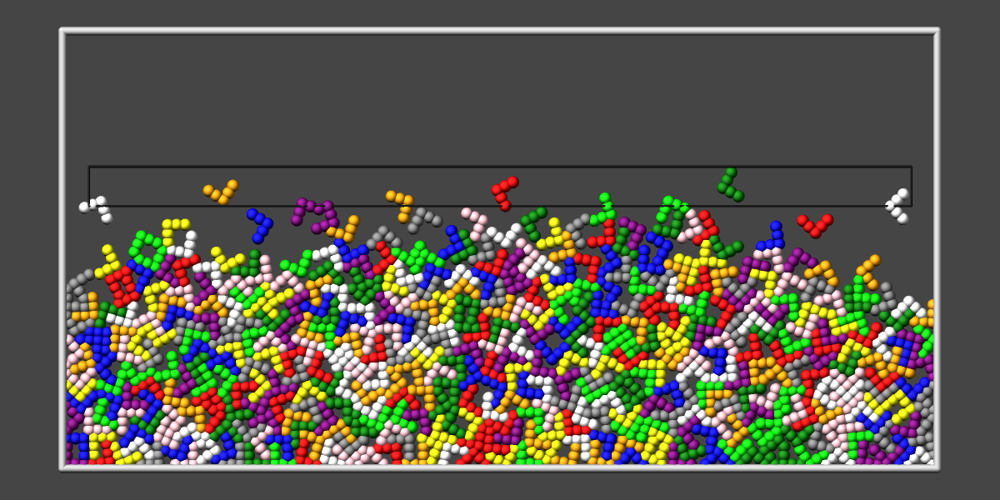 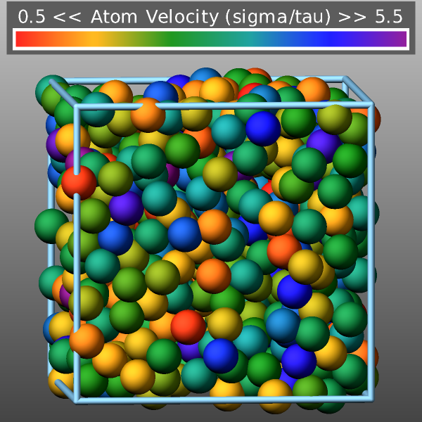 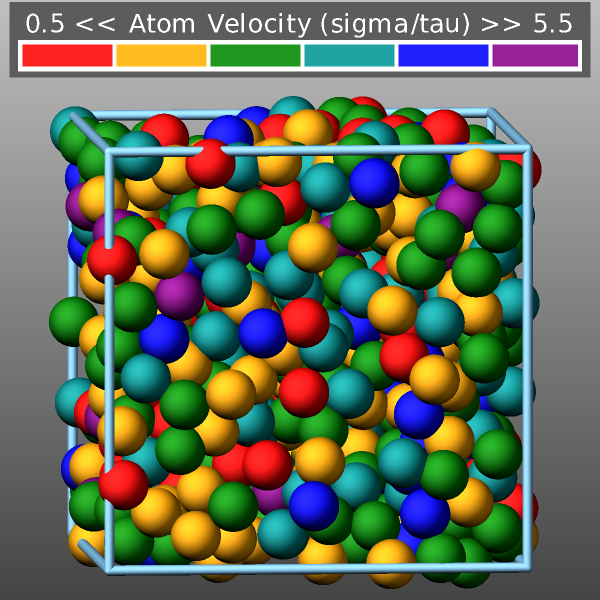 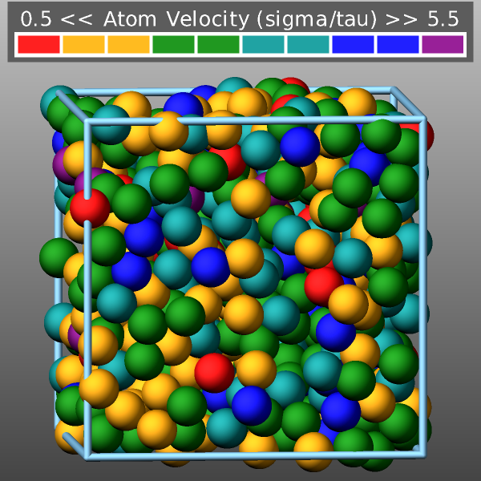
The backcolor sets the background color of the images. The color name can be any of the 140 pre-defined colors (see below) or a color name defined by the dump_modify color option.
Added in version 11Feb2026.
The backcolor2 sets a second background color of the images to create a vertical background gradient. The regular background color is the color at the bottom and backcolor2 sets the background color at the top. The color in between is a linear interpolation between those two colors. The color name can be any of the 140 pre-defined colors (see below) or a color name defined by the dump_modify color option. Using a color name of “none” will disable the background gradient feature (this is the default).
The bcolor keyword can be used with the dump image command, with its bond keyword, when its color setting is type, to set the color that bonds of each type will be drawn in the image.
The specified type should be a type label or integer from 1 to \(N\), where \(N\) is the number of bond types. For numeric types, a wildcard asterisk can be used in place of or in conjunction with the type argument to specify a range of bond types. This takes the form “*” or “*n” or “m*” or “m*n”. If \(N\) is the number of bond types, then an asterisk with no numerical values means all types from 1 to \(N\). A leading asterisk means all types from 1 to n (inclusive). A trailing asterisk means all types from m to \(N\) (inclusive). A middle asterisk means all types from m to n (inclusive).
The specified color can be a single color which is any of the 140 pre-defined colors (see below) or a color name defined by the dump_modify color option. Or it can be two or more colors separated by a “/” character (e.g., red/green/blue). In the former case, that color is assigned to all the specified bond types. In the latter case, the list of colors are assigned in a round-robin fashion to each of the specified bond types.
The bdiam keyword can be used with the dump image command, with its bond keyword, when its diam setting is type, to set the diameter that bonds of each type will be drawn in the image. The specified type should be a type label or integer from 1 to Nbondtypes. As with the bcolor keyword, a wildcard asterisk can be used as part of the type argument to specify a range of numeric bond types. The specified diam is the size in whatever distance units you are using (e.g., Angstroms).
The bitrate keyword can be used with the dump movie command to define the size of the resulting movie file and its quality via setting how many kbits per second are to be used for the movie file. Higher bitrates require less compression and will result in higher quality movies. The quality is also determined by the compression format and encoder. The default setting is 2000 kbit/s, which will result in average quality with older compression formats.
Note
Not all movie file formats supported by dump movie allow the bitrate to be set. If not, the setting is silently ignored.
The boxcolor keyword sets the color of the simulation box drawn around the atoms in each image as well as the color of processor subdomain boundaries. See the “dump image box” command for how to specify that a box be drawn via the box keyword, and the subdomain boundaries via the subbox keyword. The color name can be any of the 140 pre-defined colors (see below) or a color name defined by the dump_modify color option.
Changed in version 30Mar2026: add support for entering colors in hexadecimal
The color keyword allows defining new named colors or changing the definition of the 140-predefined colors (see below). Three red/green/blue RGB values are associated with each color name. The color name can then be used with any other dump_modify keyword that takes a color name as a value. The RGB values should be either specified as three floating point values between 0.0 and 1.0 inclusive or as a single 24-bit hexadecimal number. The following two commands are equivalent.
dump_modify 1 color mygray 0.431 0.498 0.502
dump_modify 1 color mygray 0x6e7f80
Transparency settings for atoms bonds and standard visualization objects
Added in version 11Feb2026.
Various graphical objects in dump image output can be rendered in a transparent fashion using the so-called screen-door transparency method. This means that only a subset of pixels for a graphical object are written to the image. This can be controlled with various dump_modify settings: atrans for atoms, btrans for bonds, axestrans for axes lines, boxtrans for the simulation box, and subboxtrans for the subdomain box lines. The transparency value must be between 0.0 (invisible) and 1.0 (fully opaque). The default setting for all is 1.0.
Recommended transparency values are 0.25, 0.5, or 0.75 when used in combination with fsaa on.
Added in version 11Feb2026.
The fcolor keyword sets the color of any image objects created by a fix when using the color style “const”. The first argument is the fix ID used with the dump image fix command and the second argument is the color name. The color name can be any of the 140 pre-defined colors (see below) or a color name defined by the dump_modify color option.
The ftrans keyword sets the transparency of any image objects created by a fix when using the color style “const”. The first argument is the fix ID used with the dump image fix command and the second argument is the transparency value. The transparency value must be between 0.0 (invisible) and 1.0 (fully opaque). The default setting is 1.0.
Recommended transparency values are 0.25, 0.5, or 0.75 when used in combination with fsaa on.
The framerate keyword can be used with the dump movie command to define the duration of the resulting movie file. Movie files written by the dump movie command have a default frame rate of 24 frames per second and the images generated will be converted at that rate. Thus a sequence of 1000 dump images will result in a movie of about 42 seconds. To make a movie run longer you can either generate images more frequently or lower the frame rate. To speed a movie up, you can do the inverse. Using a frame rate higher than 24 is not recommended, as it will result in simply dropping the rendered images. It is more efficient to dump images less frequently.
The gmap keyword can be used with the dump image command, with its grid keyword, to setup a color map. The color map is used to assign a specific RGB (red/green/blue) color value to an individual grid cell when it is drawn, based on the grid cell value, which is a numeric quantity specified with the grid keyword.
The arguments for the gmap keyword are identical to those for the amap keyword (for atom coloring) described above.
Added in version 4Jul2026.
The bmap keyword can be used with the dump image command, with its bond keyword, when the bond color value is a compute reference (c_ID or c_ID[I]), to setup a color map. The color map is used to assign a specific RGB (red/green/blue) color value to an individual bond when it is drawn, based on the per-bond value returned by the referenced compute.
The arguments for the bmap keyword are identical to those for the amap keyword (for atom coloring) described above.
Added in version 4Jul2026.
The lights keyword can be used to set the relative intensities of the four light sources used to illuminate the scene: ambient, key, fill, and back. Each value must be between 0.0 and 1.0.
dump_modify 1 lights 0.3 0.7 0.4 0.2
The ambient light provides base-level illumination from all directions. The key light is the primary light source and creates the main highlights. The fill light is a secondary light source that softens shadows created by the key light. The back light illuminates the scene from behind the camera to provide depth.
Added in version 4Jul2026.
The loadcolors and savecolors keywords can be used to read or write the current per-atom-type color assignments and their definitions from or to a JSON format file. Also, the current lights settings are read and applied or stored. These files can be read, modified interactively, and written by LAMMPS-GUI. This provides a convenient way to have custom color definitions and custom color to type assignments. When the system has more atom types than colors, colors are named “type#” with “#” being the number of the atom type so that the color names are unique. Per-element colors currently cannot be saved or customized.
Below is a simple example for a colors file for a system with two atom types using the default color and light settings:
{
"application": "LAMMPS",
"format": "colors",
"revision": 1,
"title": "per-type colors for dump image",
"schema": "https://download.lammps.org/json/color-schema.json",
"colors": [
{
"name": "red",
"red": 1.0,
"green": 0.0,
"blue": 0.0
},
{
"name": "forestgreen",
"red": 0.133,
"green": 0.545,
"blue": 0.133
}
],
"lights": {
"ambient": 0.0,
"key": 0.9,
"fill": 0.45,
"back": 0.9
}
}
Restrictions
The dump image and dump movie commands are part of the GRAPHICS package. They are only enabled if LAMMPS was built with that package. See the Build package page for more info.
To write JPEG or PNG format images, support for the corresponding graphics libraries must have been compiled and linked into LAMMPS. Please see the instructions for building LAMMPS with the GRAPHICS package for more information on how to do that.
To write movie dumps, you must use the -DLAMMPS_FFMPEG switch when building LAMMPS and have the FFmpeg executable available on the machine where LAMMPS is being run. Typically its name is lowercase (i.e., “ffmpeg”).
Note that since FFmpeg is run as an external program via a pipe, LAMMPS has limited control over its execution and no knowledge about errors and warnings printed by it. Those warnings and error messages will be printed to the screen only. Due to the way image data are communicated to FFmpeg, it will often print the message
pipe:: Input/output error
which can be safely ignored. Other warnings and errors have to be addressed according to the FFmpeg documentation. One known issue is that certain movie file formats (e.g., MPEG level 1 and 2 format streams) have video bandwidth limits that can be crossed when rendering too large of image sizes. Typical warnings look like this:
[mpeg @ 0x98b5e0] packet too large, ignoring buffer limits to mux it
[mpeg @ 0x98b5e0] buffer underflow st=0 bufi=281407 size=285018
[mpeg @ 0x98b5e0] buffer underflow st=0 bufi=283448 size=285018
In this case it is recommended either to reduce the size of the image or to encode in a different format that is also supported by your copy of FFmpeg and which does not have this limitation (e.g., .avi, .mkv, mp4).
Default
The defaults for the dump image and dump movie keywords are as follows:
adiam = not specified (use diameter setting)
atom = yes
bond = none none (if no bonds in system)
bond = atom 0.5 (if bonds in system)
size = 512 512
view = 60 30 (for 3d)
view = 0 0 (for 2d)
center = s 0.5 0.5 0.5
up = 0 0 1 (for 3d)
up = 0 1 0 (for 2d)
zoom = 1.0
box = yes 0.02
axes = no 0.0 0.0
subbox = no 0.0
shiny = 1.0
ssao = no
fsaa = no
The defaults for the dump_modify keywords specific to dump image and dump movie are as follows:
acolor = * red/forestgreen/blue/gold/cyan/magenta/silver/orange/lime/gray/darkred/darkgreen/darkblue/darkcyan/darkmagenta/darkgray
adiam = * 1.0
amap = min max cf 0.0 2 min blue max red
atrans = 1.0
backcolor = black
backcolor2 = none
bcolor = * red/forestgreen/blue/gold/cyan/magenta/silver/orange/lime/gray/darkred/darkgreen/darkblue/darkcyan/darkmagenta/darkgray
bdiam = * 0.5
btrans = 1.0
boxcolor = gold
axestrans = 1.0
boxtrans = 1.0
subboxtrans = 1.0
color = 140 color names are pre-defined as listed below
lights = 0.0 0.9 0.45 0.9
bitrate = 2000
framerate = 24
gmap = min max cf 0.0 2 min blue max red
Default color sequence: 


These are the standard 109 element names that LAMMPS pre-defines for use with the dump image and dump_modify commands.
1-10 = “H”, “He”, “Li”, “Be”, “B”, “C”, “N”, “O”, “F”, “Ne”
11-20 = “Na”, “Mg”, “Al”, “Si”, “P”, “S”, “Cl”, “Ar”, “K”, “Ca”
21-30 = “Sc”, “Ti”, “V”, “Cr”, “Mn”, “Fe”, “Co”, “Ni”, “Cu”, “Zn”
31-40 = “Ga”, “Ge”, “As”, “Se”, “Br”, “Kr”, “Rb”, “Sr”, “Y”, “Zr”
41-50 = “Nb”, “Mo”, “Tc”, “Ru”, “Rh”, “Pd”, “Ag”, “Cd”, “In”, “Sn”
51-60 = “Sb”, “Te”, “I”, “Xe”, “Cs”, “Ba”, “La”, “Ce”, “Pr”, “Nd”
61-70 = “Pm”, “Sm”, “Eu”, “Gd”, “Tb”, “Dy”, “Ho”, “Er”, “Tm”, “Yb”
71-80 = “Lu”, “Hf”, “Ta”, “W”, “Re”, “Os”, “Ir”, “Pt”, “Au”, “Hg”
81-90 = “Tl”, “Pb”, “Bi”, “Po”, “At”, “Rn”, “Fr”, “Ra”, “Ac”, “Th”
91-100 = “Pa”, “U”, “Np”, “Pu”, “Am”, “Cm”, “Bk”, “Cf”, “Es”, “Fm”
101-109 = “Md”, “No”, “Lr”, “Rf”, “Db”, “Sg”, “Bh”, “Hs”, “Mt”
These are the 140 colors that LAMMPS pre-defines for use with the dump image and dump_modify commands. Additional colors can be defined with the dump_modify color command. The 3 numbers listed for each name are the RGB (red/green/blue) values.
aliceblue: 0.941, 0.973, 1.000 |
antiquewhite: 0.980, 0.922, 0.843 |
|
aquamarine: 0.498, 1.000, 0.831 |
azure: 0.941, 1.000, 1.000 |
beige: 0.961, 0.961, 0.863 |
bisque: 1.000, 0.894, 0.769 |
|
blanchedalmond: 1.000, 1.000, 0.804 |
|
blueviolet: 0.541, 0.169, 0.886 |
brown: 0.647, 0.165, 0.165 |
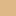 burlywood: 0.871, 0.722, 0.529 |
cadetblue: 0.373, 0.620, 0.627 |
 chartreuse: 0.498, 1.000, 0.000 |
chocolate: 0.824, 0.412, 0.118 |
coral: 1.000, 0.498, 0.314 |
cornflowerblue: 0.392, 0.584, 0.929 |
cornsilk: 1.000, 0.973, 0.863 |
crimson: 0.863, 0.078, 0.235 |
|
|
|
darkgoldenrod: 0.722, 0.525, 0.043 |
|
|
darkkhaki: 0.741, 0.718, 0.420 |
|
darkolivegreen: 0.333, 0.420, 0.184 |
darkorange: 0.545, 0.271, 0.000 |
darkorchid: 0.600, 0.196, 0.800 |
|
darksalmon: 0.914, 0.588, 0.478 |
darkseagreen: 0.561, 0.737, 0.561 |
darkslateblue: 0.282, 0.239, 0.545 |
darkslategray: 0.184, 0.310, 0.310 |
darkturquoise: 0.000, 0.808, 0.820 |
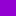 darkviolet: 0.580, 0.000, 0.827 |
deeppink: 1.000, 0.078, 0.576 |
deepskyblue: 0.000, 0.749, 1.000 |
dimgray: 0.412, 0.412, 0.412 |
dodgerblue: 0.118, 0.565, 1.000 |
firebrick: 0.698, 0.133, 0.133 |
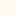 floralwhite: 1.000, 0.980, 0.941 |
|
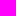 fuchsia: 1.000, 0.000, 1.000 |
gainsboro: 0.863, 0.863, 0.863 |
ghostwhite: 0.973, 0.973, 1.000 |
|
goldenrod: 0.855, 0.647, 0.125 |
|
|
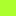 greenyellow: 0.678, 1.000, 0.184 |
honeydew: 0.941, 1.000, 0.941 |
hotpink: 1.000, 0.412, 0.706 |
indianred: 0.804, 0.361, 0.361 |
indigo: 0.294, 0.000, 0.510 |
ivory: 1.000, 0.941, 0.941 |
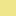 khaki: 0.941, 0.902, 0.549 |
lavender: 0.902, 0.902, 0.980 |
lavenderblush: 1.000, 0.941, 0.961 |
lawngreen: 0.486, 0.988, 0.000 |
lemonchiffon: 1.000, 0.980, 0.804 |
lightblue: 0.678, 0.847, 0.902 |
lightcoral: 0.941, 0.502, 0.502 |
lightcyan: 0.878, 1.000, 1.000 |
lightgoldenrodyellow: 0.980, 0.980, 0.824 |
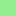 lightgreen: 0.565, 0.933, 0.565 |
lightgrey: 0.827, 0.827, 0.827 |
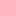 lightpink: 1.000, 0.714, 0.757 |
lightsalmon: 1.000, 0.627, 0.478 |
lightseagreen: 0.125, 0.698, 0.667 |
lightskyblue: 0.529, 0.808, 0.980 |
lightslategray: 0.467, 0.533, 0.600 |
lightsteelblue: 0.690, 0.769, 0.871 |
lightyellow: 1.000, 1.000, 0.878 |
|
limegreen: 0.196, 0.804, 0.196 |
linen: 0.980, 0.941, 0.902 |
|
maroon: 0.502, 0.000, 0.000 |
mediumaquamarine: 0.400, 0.804, 0.667 |
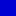 mediumblue: 0.000, 0.000, 0.804 |
mediumorchid: 0.729, 0.333, 0.827 |
mediumpurple: 0.576, 0.439, 0.859 |
mediumseagreen: 0.235, 0.702, 0.443 |
mediumslateblue: 0.482, 0.408, 0.933 |
mediumspringgreen: 0.000, 0.980, 0.604 |
mediumturquoise: 0.282, 0.820, 0.800 |
mediumvioletred: 0.780, 0.082, 0.522 |
midnightblue: 0.098, 0.098, 0.439 |
mintcream: 0.961, 1.000, 0.980 |
mistyrose: 1.000, 0.894, 0.882 |
moccasin: 1.000, 0.894, 0.710 |
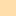 navajowhite: 1.000, 0.871, 0.678 |
navy: 0.000, 0.000, 0.502 |
oldlace: 0.992, 0.961, 0.902 |
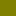 olive: 0.502, 0.502, 0.000 |
olivedrab: 0.420, 0.557, 0.137 |
|
orangered: 1.000, 0.251, 0.000 |
orchid: 0.855, 0.439, 0.839 |
palegoldenrod: 0.933, 0.910, 0.667 |
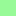 palegreen: 0.596, 0.984, 0.596 |
paleturquoise: 0.686, 0.933, 0.933 |
palevioletred: 0.859, 0.439, 0.576 |
|
peachpuff: 1.000, 0.937, 0.835 |
peru: 0.804, 0.522, 0.247 |
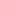 pink: 1.000, 0.753, 0.796 |
plum: 0.867, 0.627, 0.867 |
powderblue: 0.690, 0.878, 0.902 |
purple: 0.502, 0.000, 0.502 |
|
rosybrown: 0.737, 0.561, 0.561 |
royalblue: 0.255, 0.412, 0.882 |
saddlebrown: 0.545, 0.271, 0.075 |
salmon: 0.980, 0.502, 0.447 |
sandybrown: 0.957, 0.643, 0.376 |
seagreen: 0.180, 0.545, 0.341 |
seashell: 1.000, 0.961, 0.933 |
sienna: 0.627, 0.322, 0.176 |
|
skyblue: 0.529, 0.808, 0.922 |
slateblue: 0.416, 0.353, 0.804 |
slategray: 0.439, 0.502, 0.565 |
snow: 1.000, 0.980, 0.980 |
springgreen: 0.000, 1.000, 0.498 |
steelblue: 0.275, 0.510, 0.706 |
tan: 0.824, 0.706, 0.549 |
teal: 0.000, 0.502, 0.502 |
thistle: 0.847, 0.749, 0.847 |
tomato: 0.992, 0.388, 0.278 |
turquoise: 0.251, 0.878, 0.816 |
violet: 0.933, 0.510, 0.933 |
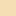 wheat: 0.961, 0.871, 0.702 |
white: 1.000, 1.000, 1.000 |
whitesmoke: 0.961, 0.961, 0.961 |
 yellow: 1.000, 1.000, 0.000 |
yellowgreen: 0.604, 0.804, 0.196 |
 aqua: 0.000, 1.000, 1.000
aqua: 0.000, 1.000, 1.000 black: 0.000, 0.000, 0.000
black: 0.000, 0.000, 0.000 green: 0.000, 1.000, 0.000
green: 0.000, 1.000, 0.000 papayawhip: 1.000, 0.937, 0.835
papayawhip: 1.000, 0.937, 0.835{kind=link}
{kind=link}
{kind=link}
{kind=link}
{kind=link}
{kind=link}
{kind=link}
{kind=link}
{kind=link}